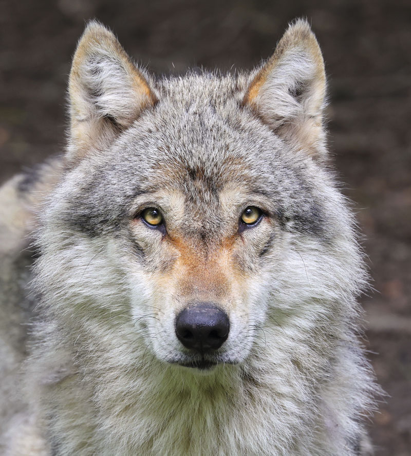

informações e curiosidades sobre lobos

spécie e Habitat: O lobo-cinzento é a espécie mais comum, adaptando-se a ambientes que variam desde a tundra ártica e florestas densas até montanhas e planícies semiáridas no Hemisfério Norte.Dimensões: Um lobo adulto costuma medir entre 80 cm e 85 cm de altura na altura do ombro, pesando de 30 kg a mais de 60 kg, dependendo da região e da subespécie.Dieta: São animais estritamente carnívoros e caçadores formidáveis, alimentando-se principalmente de grandes ungulados como veados, alces, uapitis e bisões, além de pequenos mamíferos como lebres e castores. src da tag img.
Avançando nos Projetos

O lobo-cinzento (Canis lupus) é o maior canídeo selvagem do mundo e o ancestral de todos os cães domésticos. Extremamente inteligente, ele vive em alcateias familiares altamente organizadas e é um dos predadores mais resilientes do planeta, adaptado para sobreviver desde desertos até o ártico.5 Curiosidades Rápidas:Uivos com "Sotaque": Os uivos de um lobo podem ser ouvidos a até 10 km de distância. Além disso, cientistas descobriram que diferentes alcateias e subespécies têm "sotaques" e frequências de uivo distintas.Resistência Incomparável: Eles não são os corredores mais rápidos, mas ganham pelo cansaço. Um lobo pode trotar a cerca de 8 km/h por dias seguidos sem descansar e atingir picos de 60 km/h durante uma caçada.Olhos Azuis Precoces: Todos os filhotes de lobo nascem com olhos azuis. A cor original da íris muda para tons de amarelo, dourado ou âmbar por volta das 8 a 16 semanas de vida.Super Mordida: A pressão da mordida de um lobo-cinzento pode passar de 400 kgf/cm² (cerca de 1500 libras). Isso é o dobro da força da mordida de um Pastor Alemão, sendo forte o suficiente para quebrar ossos grandes com uma única abocanhada.Engenheiros do Ecossistema: Quando os lobos foram reintroduzidos no Parque de Yellowstone (EUA), eles controlaram o excesso de veados. Isso fez com que as florestas e margens de rios se regenerassem, mudando literalmente o curso dos rios e salvando dezenas de outras espécies de animais. CSS (lá em cima na tag style), alterar o tamanho das fontes e adicionar novas postagens simplesmente copiando e colando este bloco de código.